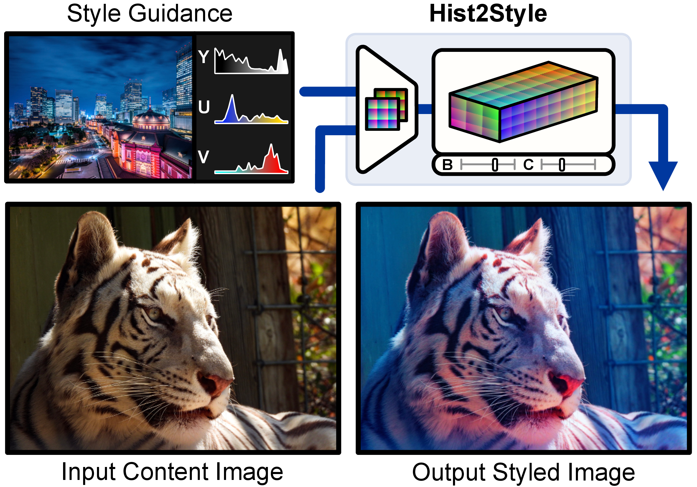
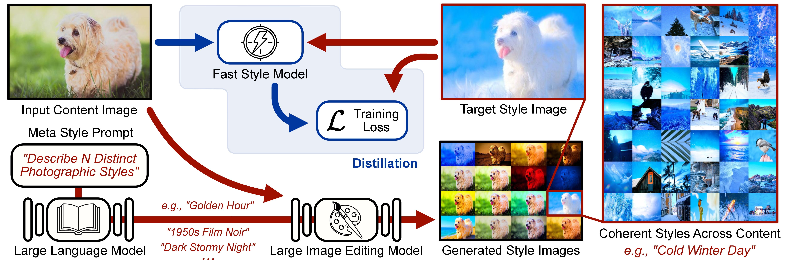
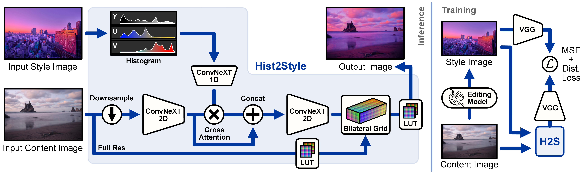
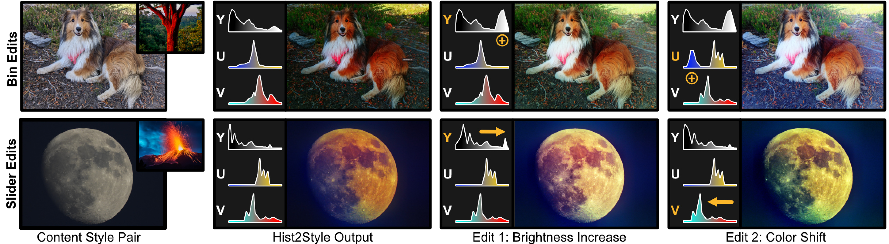
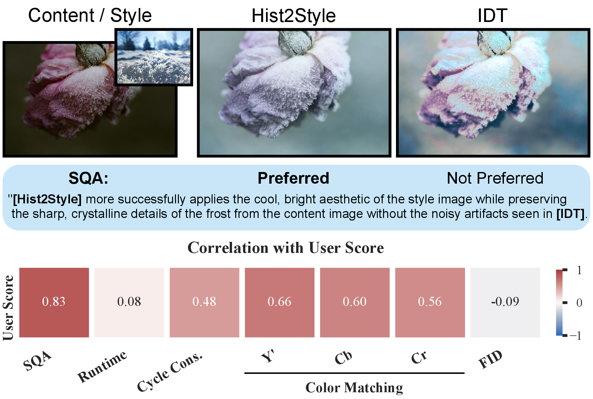
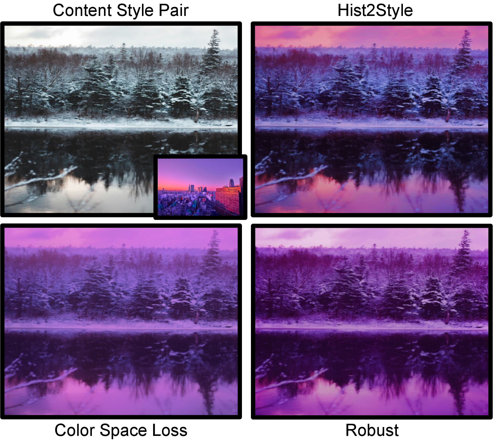

Abstract
Photorealistic style transfer aims to match the color and tone of an input image to that of a style target while preserving content and fine details. Existing large image-editing models can perform stylization, but their computational cost, hallucinations, and limited precision control make them impractical for high-resolution, interactive workflows. Hist2Style addresses this by distilling a large editor into a lightweight model constrained to locally affine transformations in bilateral space. The model conditions on a histogram-based style embedding, enabling an interpretable and editable interface for color and tone control. Hist2Style delivers real-time, high-resolution photorealistic stylization, avoids structural drift by construction, and supports interactive user-guided adjustments.
Key Contributions
- A photorealistic, histogram-guided stylization network that is robust to hallucinations and scales to high resolutions.
- An interactive real-time editing framework with direct histogram manipulation for intuitive control of color and tone.
- A Stylization Quality Assessment (SQA) metric that correlates strongly with human preference.
Method Overview

Hist2Style preserves structure by applying spatially adaptive color transforms in bilateral space while conditioning on histogram style embeddings.

Selective distillation pipeline from a large image-editing model to a lightweight, task-specialized stylization network.

Dual-branch architecture with cross-attention fusion, bilateral grid prediction, and uncertainty-aware slicing.
Interactive Editing and Evaluation

Interactive controls enable direct histogram manipulation with locally coherent photorealistic edits.

SQA exhibits strong agreement with user preference in stylization quality evaluation.

Ablations highlight the value of perceptual-space losses and robust histogram conditioning.
BibTeX
@InProceedings{Galor_2026_CVPR,
author = {Galor, Dekel and Pikielny, Adam and Zhang, Zhoutong and Wang, Ke and Waller, Laura and Chen, Jiawen and Chugunov, Ilya},
title = {Hist2Style: Histogram-Guided Stylization with Bilateral Grids},
booktitle = {Proceedings of the IEEE/CVF Conference on Computer Vision and Pattern Recognition (CVPR)},
month = {June},
year = {2026},
pages = {29717-29726}
}